Quick answer
Non-Chinese speakers in the United States and Canada can use Taobao by downloading the app, creating an account, using English or image search, learning a small set of Chinese checkout labels and selecting an available international shipping method. Taobao can offer more variety than its English-facing catalogue, but shipping eligibility, interface options and final cost vary by country, product and account.
Can you use Taobao in the US or Canada without speaking Chinese?
Yes. Taobao may show an English and locally oriented experience for some North American users, and English searches can return relevant products. However, the Mainland China setting may show a wider catalogue. If you switch settings, expect more Chinese interface text and prices that may continue to display in CNY.
My basic recommendation: If you are new to Taobao, begin with products that show a clear supported shipping route. Do not assume every listing can be delivered to your US or Canadian address.
Step 1: How do you download and register for Taobao?
Download the official Taobao app from your mobile app store, review the permissions and register using one of the sign-in methods offered on your device. Available methods can vary by region and app version.
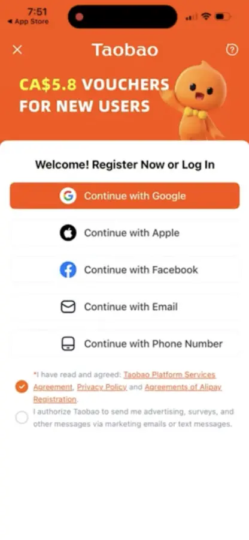
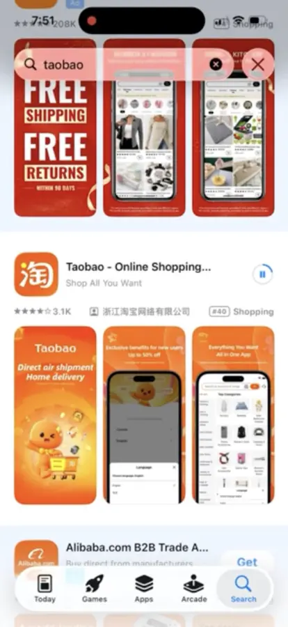
Step 2: Should you keep the English North America setting?
The English-facing setup is easier for beginners, but it may show fewer products and different prices. To explore the Mainland China catalogue, open Account, then find Country and Region/Language/Currency. During my September 2026 test, selecting USD or CAD did not always change displayed prices from CNY, so verify the actual checkout conversion.
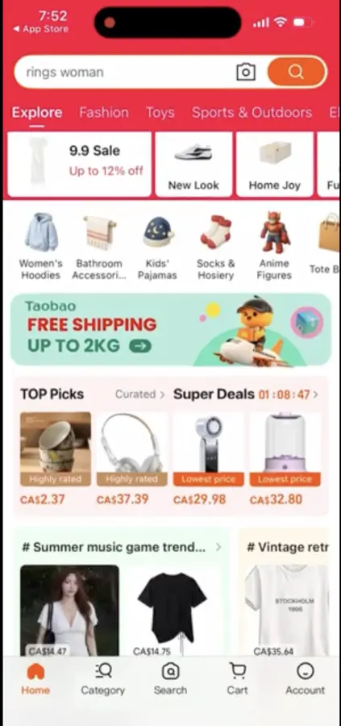
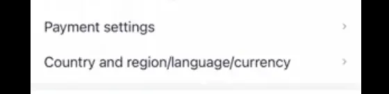
Step 3: Can you search Taobao in English?
Yes. English search terms can return relevant products, and image search is useful when a translated phrase is too broad. Compare multiple listings, seller history, buyer photos, dimensions, materials and shipping eligibility before choosing an item.
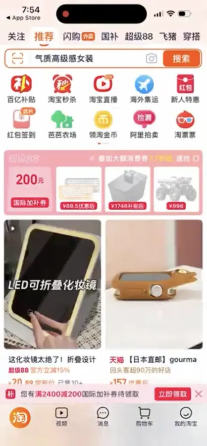
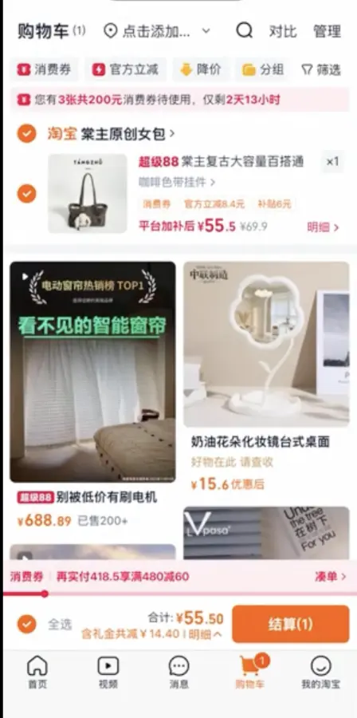
Step 4: How do you add a US or Canadian address?
At checkout, add the real North American delivery address and save it. Taobao uses the address to determine which items and logistics methods are available. Recheck unit number, postal or ZIP code, state or province and phone information before continuing.
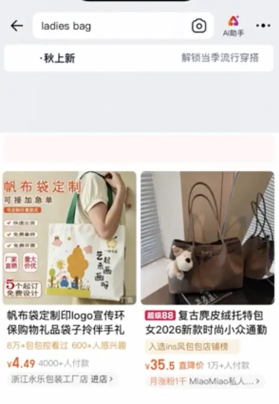
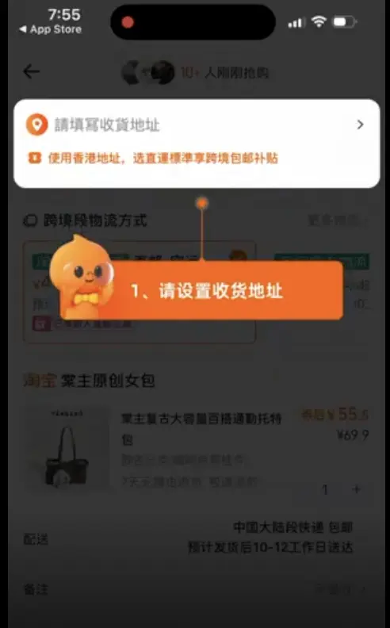
What do the Taobao shipping options mean in English?
Select 更多物流, meaning “see all shipping methods,” to review the choices available for that order. The following descriptions and delivery estimates are taken from the options visible in my September 2026 walkthrough. They are examples, not permanent platform-wide promises.
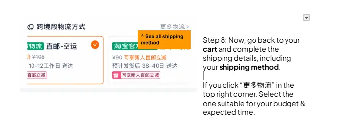
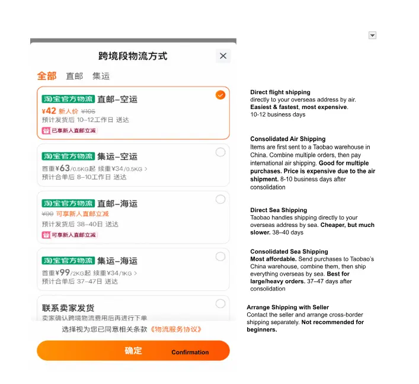
| Option | What it means | Example timing shown | Best suited to |
|---|---|---|---|
| 直邮－空运 Direct air shipping | Taobao ships directly to the overseas address by air. Usually the easiest and fastest choice, but often the most expensive. | 10–12 business days | Beginners or smaller time-sensitive orders |
| 集运－空运 Consolidated air shipping | Items first go to a Taobao warehouse in China. Multiple orders are combined, then the international air-shipping charge is paid. | 8–10 business days after consolidation | Multiple purchases that still need faster delivery |
| 直邮－海运 Direct sea shipping | Taobao handles shipment to the overseas address by sea. It can cost less than air, but takes much longer. | 38–40 days | Non-urgent orders |
| 集运－海运 Consolidated sea shipping | Purchases go to Taobao’s China warehouse, are combined, and ship overseas together by sea. | 37–47 days after consolidation | Larger, heavier or multi-seller orders |
| 联系卖家发货 Arrange shipping with seller | Contact the seller and arrange cross-border delivery separately. | Varies | Experienced buyers; not recommended for beginners |
Important: Consolidation or forwarding may involve a second freight payment, warehouse handling, duties, taxes or carrier fees. My past forwarding orders were more likely to involve additional charges, but that is personal experience rather than a guarantee for every shipment.
Which Chinese Taobao checkout labels should beginners know?
- 购物车 — Shopping cart
- 结算 — Check out
- 更多物流 — See all shipping methods
- 确定 — Confirm
- 直邮 — Direct shipping
- 集运 — Consolidated shipping
- 空运 — Air shipping
- 海运 — Sea shipping
How do you pay for Taobao from the US or Canada?
Add a supported payment method shown at checkout. Review the product price, Chinese domestic delivery, international freight estimate and currency conversion before pressing the final payment button. A card issuer may apply its own foreign-exchange rate or fee.
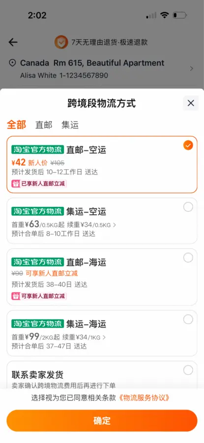
What is worth buying on Taobao?
From my own work and everyday use, Taobao is especially useful for custom printed materials, unusual finishes, packaging, booth materials, event props, furniture and home décor, fabrics, craft materials, clothing and accessories. These are categories where the size of the supplier ecosystem and range of variations can be valuable.
What would I avoid as a beginner?
I would be more cautious with food and electronic devices because they can involve import restrictions, batteries, electrical compatibility, certifications, warranties, safety requirements or special freight conditions. Check current US or Canadian import and product rules before purchasing.
Is Taobao better than Temu or Amazon?
Taobao is often better for deep product choice and custom options; Temu is usually easier for an English-speaking cross-border shopper; Amazon and Walmart are often more convenient when local delivery and familiar support matter most. Compare the total delivered cost rather than the listing price alone.
Compare Taobao, Temu, Amazon and Walmart in the US and Canada →
Frequently asked questions
Does every Taobao product ship to the US or Canada?
No. Eligibility depends on the seller, product category, warehouse, account and address. Test the real address before relying on a listing.
What is consolidated shipping?
Separate orders first go to a Taobao warehouse in China. The warehouse combines them before the buyer pays for and arranges the international air or sea shipment.
Can a small business use Taobao?
Taobao can be useful for exploration, samples, booth materials, packaging ideas and small custom orders. Commercial use may require stronger supplier verification, contracts, quality control, labelling and import compliance.
Living guide update log
September 17, 2026: Published from a live Canada-based walkthrough and expanded for non-Chinese-speaking users in both the United States and Canada. Added translated checkout labels, five shipping methods, screenshots, payment guidance and buying recommendations.
Future updates can add US-specific checkout examples, interface changes, delivery tests and a full video transcript while keeping this URL stable.
Independent educational guide by Northia Marketing Consultancy Ltd.; not affiliated with Taobao. Platform interfaces, prices, shipping eligibility and delivery estimates can change. Confirm the current checkout information and applicable import rules before purchasing.